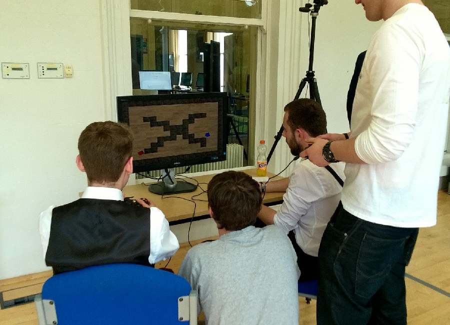

Tank War

Overview
This game was my final submission in my first year at University, gaining 95%. I created a fully playable networked game with support for multiple gamepads in local multiplayer. My highlighted code for this project is my collision detection and response algorithms. It was this submission that resulted in me being nominated for best programmer in the entire University alongside final year students.
Assesors Comments
"Daniel, this is an outstanding submission. Your game code itself shows that you have taken the time outside of lectures to further develop your programming skills"
- Jamie Stewart, academic course leader of Games Programming at University of Gloucestershire
Skills I learned from this project:
Improved C++ knowledge
2D Collision detection and response
Winsock Networking
Multithreading
Particle systems
Xbox 360 Controller Input (XINPUT)
Storing level data in a bitmap image file
Compressing level data to a binary file
COMX Exhibition
'Tank War!' was selected for display at the COMX exhibition run by the University of Gloucestershire. The picture above shows final year students engrossed in my game at COMX. They commented on how enjoyable it was to play. This was my first exhibition, it was hella fun seeing people enjoying the game I had spent a long time making!